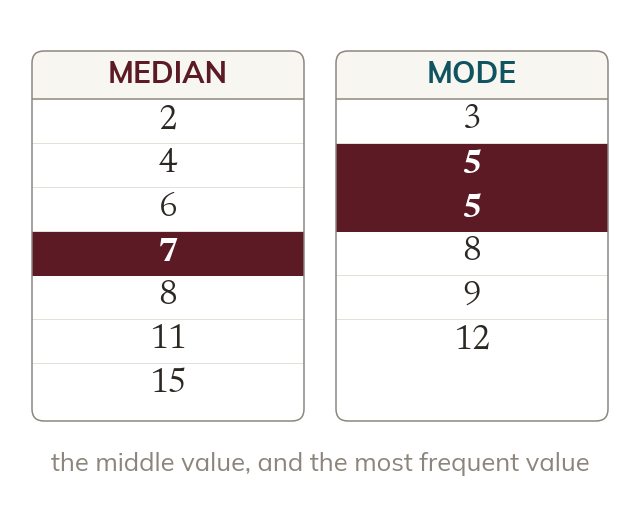

Median and mode
The median is the middle value once the data is in order. With an even count, it is halfway between the middle two. The mode is the most frequent value.
The median is the middle value once the data is in order - with an even number of values it is halfway between the middle two. The mode is the most frequent value, and a data set can have more than one mode, or none at all.